连接控制卡
连接控制卡：打开“屏掌控”，点击软件界面的【寻机】按钮或在手机设置中选择对应控制卡的Wi-Fi热点进行连接，初始密码：88888888，连接成功之后软件界面显示控制卡的名称。
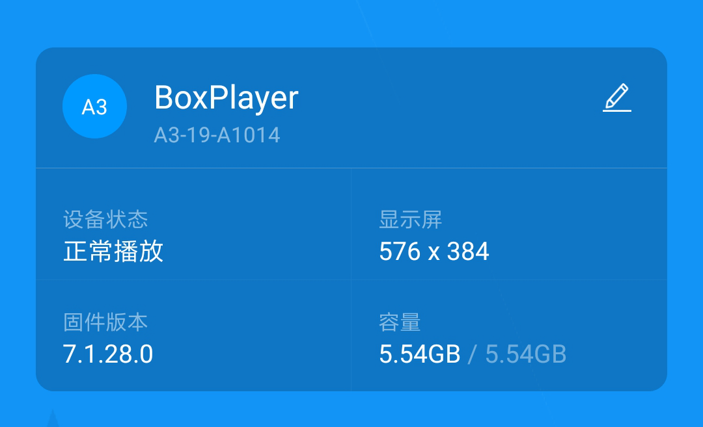
新建显示屏
在节目列表界面点击“新建显示屏”，APP自动回读已连接的控制卡型号和分辨率，点击“确定”按钮进入显示屏节目编辑。
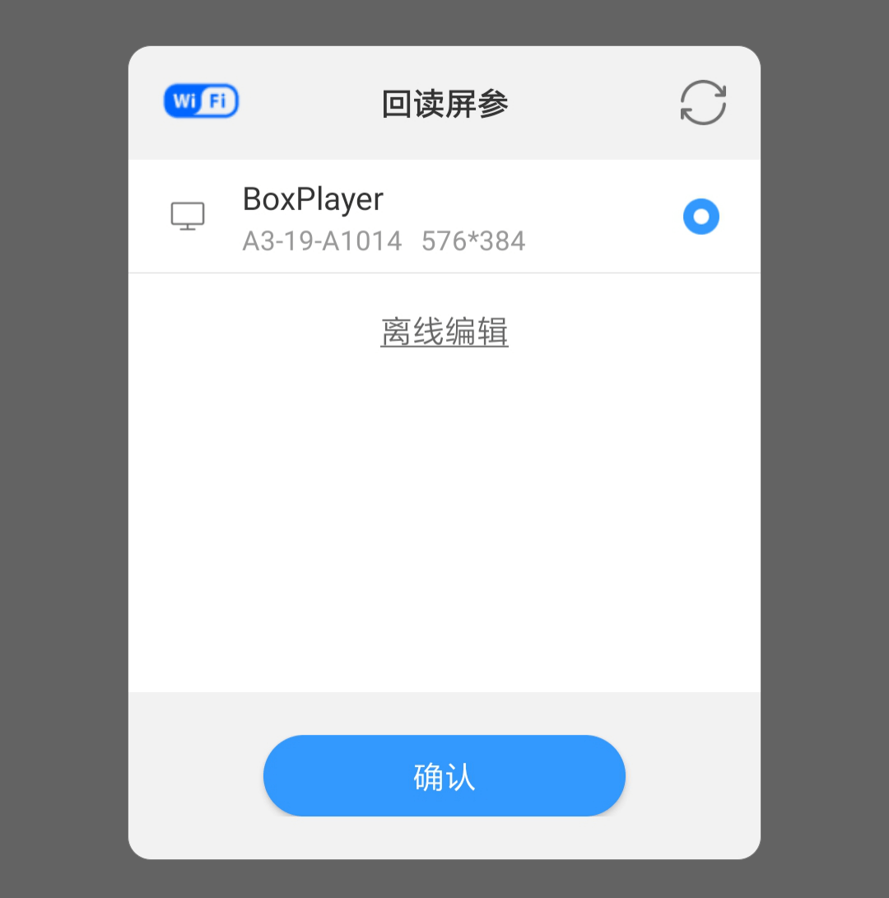
添加节目内容
点击节目编辑界面右下角“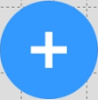”图标，可选择添加视频、图片、文本、动画字、时钟等内容，并可自由设置显示特效和区域位置等。
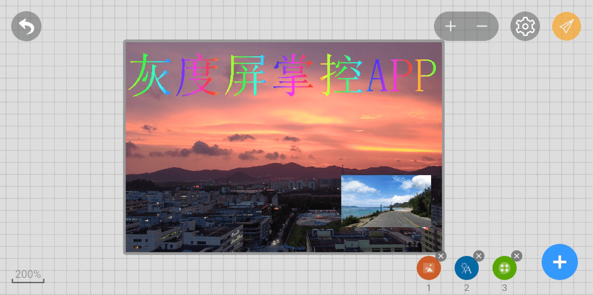
发送节目
点击右上角发送图标"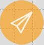"，选择“发送节目”，等待发送成功即可。
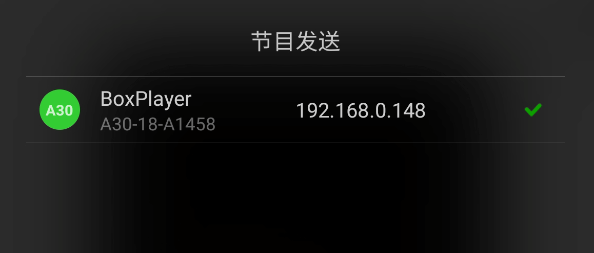
甩一甩更新节目
甩一甩功能是极简的节目更新方式，在设备界面下点击“甩一甩”图标，选择一张图片或视频，摇晃手机即可把图片或视频发送到LED显示屏上播放。
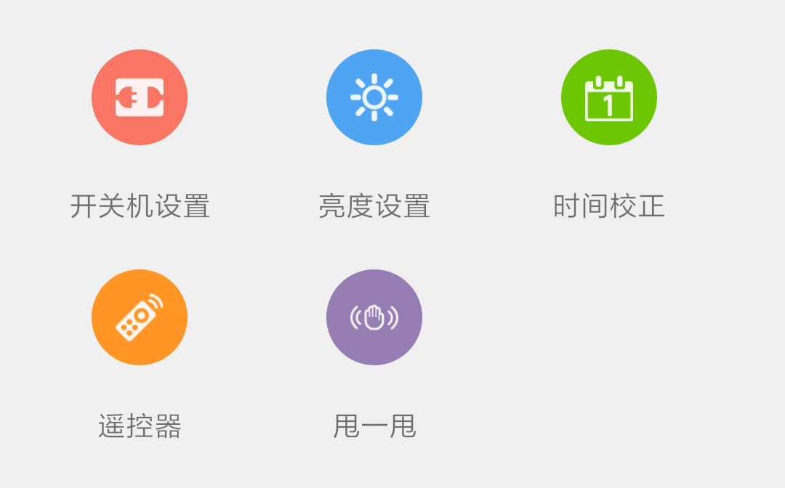
手机APP “屏掌控”除了更新节目外，还可以设置LED显示屏开关机、亮度、时间校正、遥控器和控制卡选型。
连接控制卡
连接控制卡：打开“屏掌控”，点击软件界面的【寻机】按钮或在手机设置中选择对应控制卡的Wi-Fi热点进行连接，初始密码：88888888，连接成功之后软件界面显示控制卡的名称。
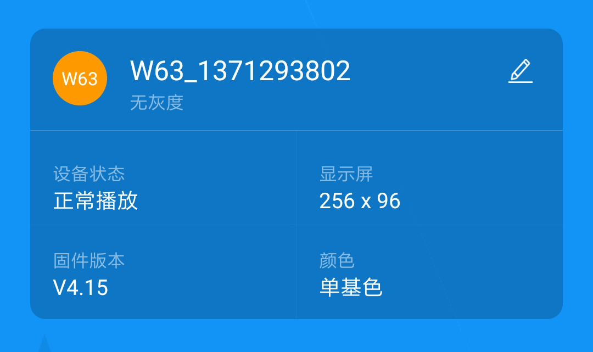
新建显示屏
在节目列表界面点击“新建显示屏”，APP自动回读已连接的控制卡型号和分辨率，点击“确定”按钮进入显示屏节目编辑。
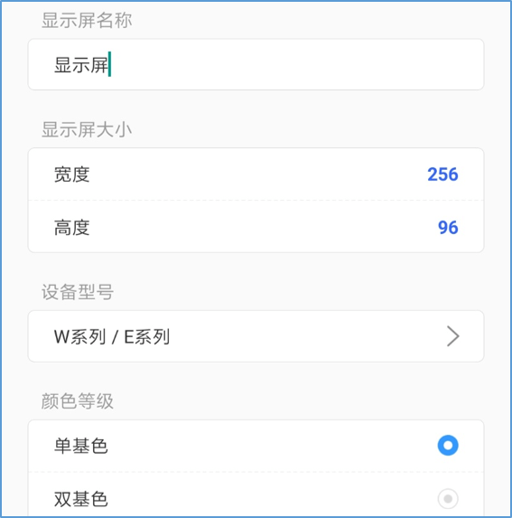
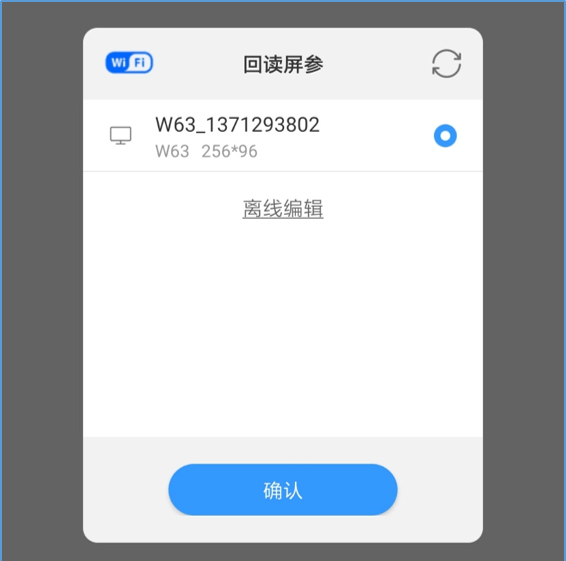
添加节目内容
点击节目编辑界面右侧“”图标，可选择添加文本、时钟、温湿度、计时等内容，并可自由设置显示特效和区域位置。
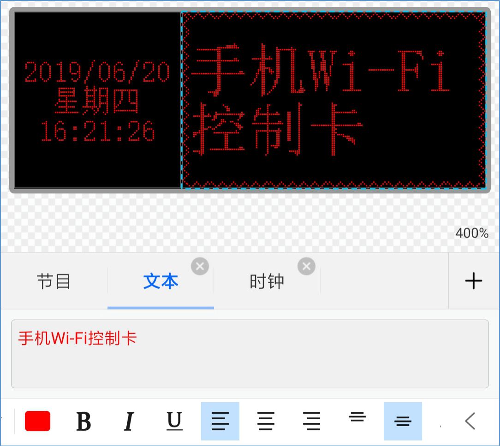
发送节目
点击右上角的“发送”按钮，等待发送成功即可。
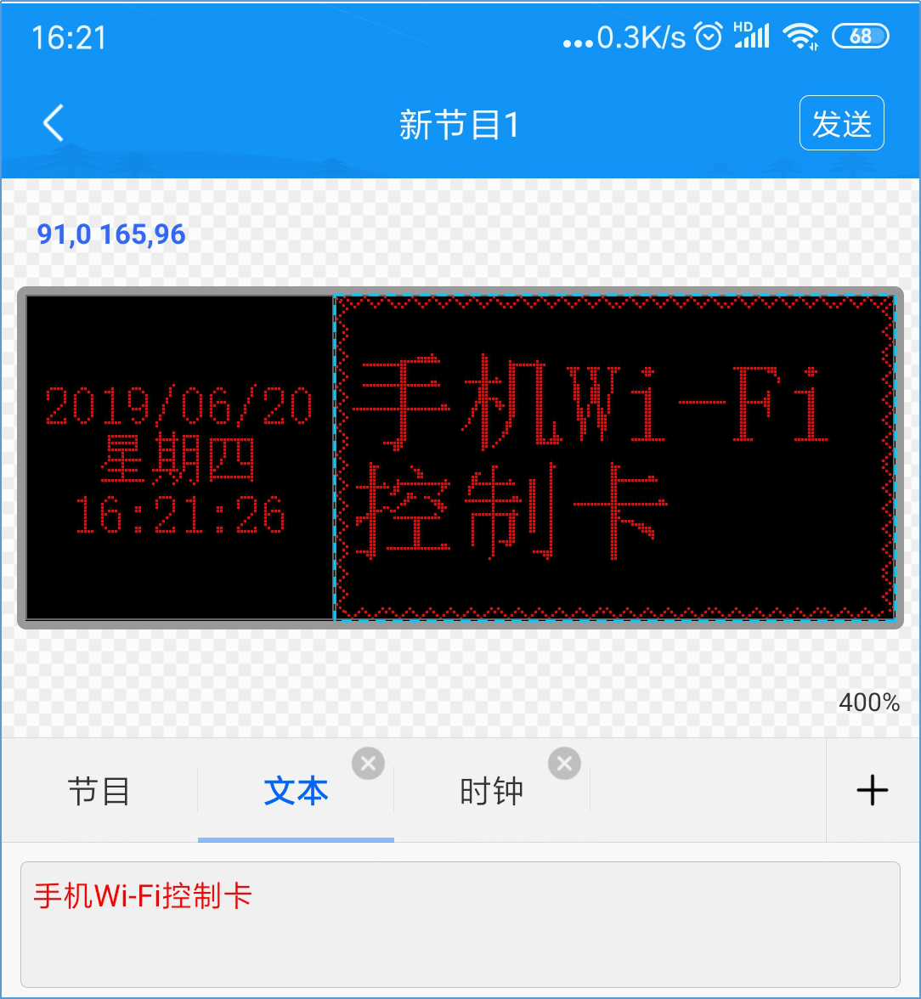
手机APP “屏掌控”除了更新节目外，还可以设置LED显示屏开关机、亮度、时间校正、遥控器、固件升级等功能。